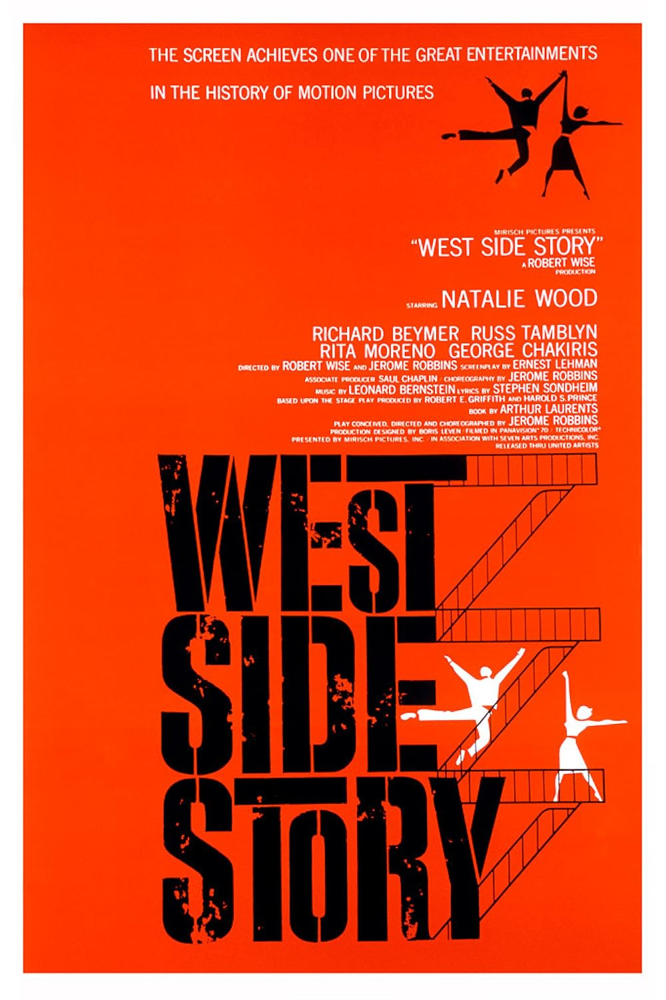

West Side Story
34th Academy Awards
(Oscars 1962)
11 Nominations, 10 Awards
| Nominations | ||
|---|---|---|
| Category | Nominees | Result |
| Best Motion Picture | Robert Wise | Won |
| Actor in a Supporting Role | George Chakiris | Won |
| Actress in a Supporting Role | Rita Moreno | Won |
| Directing | Jerome Robbins and Robert Wise | Won |
| Writing (Screenplay--based on material from another medium) | Ernest Lehman | Nominated |
| Cinematography (Color) | Daniel L. Fapp | Won |
| Film Editing | Thomas Stanford | Won |
| Art Direction (Color) | Boris Leven and Victor A. Gangelin | Won |
| Costume Design (Color) | Irene Sharaff | Won |
| Sound | Fred Hynes and Gordon E. Sawyer | Won |
| Music (Scoring of a Musical Picture) | Irwin Kostal, Johnny Green, Saul Chaplin, and Sid Ramin | Won |